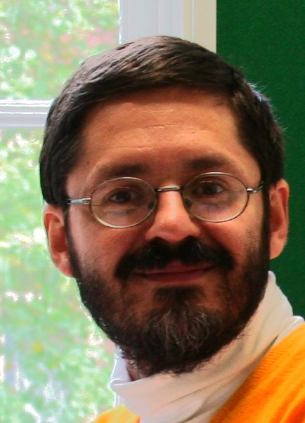

Centre for Translation Studies |
Serge Sharoff's homepage |
Centre for Translation Studies |
Serge Sharoff's homepage |
|  |
|
I am Professor of Language Technology and Digital Humanities at the Centre for Translation Studies within the School of Languages, Cultures and Societies, University of Leeds. My teaching is centred around computational tools which can assist translation, lexicography and language learning. On the research front I am involved in several projects related to corpus collection and annotation, as well as to technologies for language learning and translation.
My research interests are related to three domains: linguistics, computer science and cognitive science.
Probably the most interesting bit in my recent research is semi-automatic acquisition of representative corpora from the web, cf. the set of available corpora and the procedure described at http://corpus.leeds.ac.uk/internet.html. The current set of resources includes multi-million word corpora for Chinese, English, French, German, Italian, Polish, Portuguese, Russian and Spanish.
Web corpora can be curated in terms of domains and genres, and also via automatic annotation for parts of speech, syntactic relations or named entities. The resources for developing statistical models are relatively modest for many languages, so I research methods for bootstraping them from related languages, for example, from Russian to Ukrainian.
Another recent development is ASSIST, a joint project with Lancaster University, which is about an automatic procedure for finding translation equivalent using large comparable corpora (consisting of texts which are not translations of each other). See a series of workshops and a recent book on the topic.
My approach in linguistics rests on the assumption that language is the resource for exchanging meanings. My interests in linguistics stretch from contrastive semantics (how to study words that are used to mean things in different ways in different languages) to corpus linguistics (how to study real uses of words in their contexts) to computational linguistics (how to dewsign computational models for natural language understanding and generation). See also the page with my tools for corpus collection and processing.
My interests in communication studies focus on social practices of communities of language speakers, which result in creation and maintenance of meanings in the intersubjective space of people conducting communication.
The most convenient access to the list of my publications is via Google Scholar.
See my formal CV, as well as my academic genealogy (the list through my supervisors can be traced back to Poisson and Gauss).
Setting up a translation project usually involves assessing the amount of time required for translating a text and selecting the most suitable translator. Modern approaches in Language Technology can do wonders with text processing, but it is not clear how helpful they can be in the translation settings. For example, can they help to determine the genre of a text, its difficulty or suitability to translators? Similar text classification tools can be also used for tasks related to learning foreign languages.
Background references:
Serge Sharoff. Genre Annotation for the Web: text-external and text-internal perspectives. Register Studies. , 2021
Serge Sharoff. Functional text dimensions for the annotation of Web corpora. Corpora Journal, 13(1):65–95, 2018
Yu Yuan and Serge Sharoff, Sentence Level Human Translation Quality Estimation with Attention-based Neural Networks. In Proc International Conference on Language Resources and Evaluation (LREC'20), Marseilles, May 2020
A translation model needs to be applicable to a large number of languages, while the training resources or linguistic models are often better developed only for some languages. Language adaptation can be designed in a way similar to domain adaptation to improve the models of lesser-resourced languages by taking into account the resources available for closely related languages, e.g., from French to Romanian. This can be applied in a range of training scenarios, such as Part-Of-Speech tagging, text classification, translation quality prediction, etc.
Background references:
Serge Sharoff. Finding next of kin: Cross-lingual embedding spaces for related languages. Journal of Natural Language Engineering, 25, 2019
Modern Machine Translation is based on "plagiarising" large amounts of existing translations, which usually come from institutions such as the United Nations or the European Parliament. This is not enough for many language directions or for specific domains, such as biomedicine. What are productive methods to mine information about translations from non-parallel texts, such as Wikipedia articles on the same topic or news wire streams in different languages?
Background references:
Serge Sharoff. Know thy corpus! Robust methods for digital curation of Web corpora. In Proc LREC, Marseilles, May 2020
Maria Kunilovskaya and Serge Sharoff. Building functionally similar corpus resources for translation studies. In Proc RANLP, Varna, September 2019
Pierre Zweigenbaum, Serge Sharoff, and Reinhard Rapp. A multilingual dataset for evaluating parallel sentence extraction from comparable corpora. In Proc LREC, Miyazaki, Japan, May 2018
 leeds.ac.uk
leeds.ac.uk